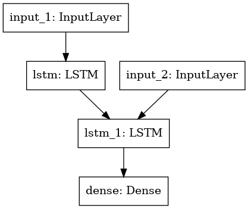

Machine Translation (Sequence-to-Sequence)#
Character-based machine translation using seq-to-seq model
This is based on:
Data:
References
from keras.models import Model
from keras.layers import Input, LSTM, Dense
import numpy as np
batch_size = 64 # Batch size for training.
epochs = 100 # Number of epochs to train for.
latent_dim = 256 # Latent dimensionality of the encoding space.
num_samples = 10000 # Number of samples to train on.
# Path to the data txt file on disk.
data_path = '../../../RepositoryData/data/cmn.txt'
# Vectorize the data.
input_texts = []
target_texts = []
input_characters = set()
target_characters = set()
with open(data_path, 'r', encoding='utf-8') as f:
lines = f.read().split('\n')
for line in lines[: min(num_samples, len(lines) - 1)]:
input_text, target_text = line.split('\t')
# We use "tab" as the "start sequence" character
# for the targets, and "\n" as "end sequence" character.
target_text = '\t' + target_text + '\n'
input_texts.append(input_text)
target_texts.append(target_text)
for char in input_text:
if char not in input_characters:
input_characters.add(char)
for char in target_text:
if char not in target_characters:
target_characters.add(char)
# Sort Dictionary
input_characters = sorted(list(input_characters))
target_characters = sorted(list(target_characters))
num_encoder_tokens = len(input_characters)
num_decoder_tokens = len(target_characters)
# Find maxinum sent lengths
max_encoder_seq_length = max([len(txt) for txt in input_texts])
max_decoder_seq_length = max([len(txt) for txt in target_texts])
print('Number of samples:', len(input_texts))
print('Number of unique input tokens:', num_encoder_tokens)
print('Number of unique output tokens:', num_decoder_tokens)
print('Max sequence length for inputs:', max_encoder_seq_length)
print('Max sequence length for outputs:', max_decoder_seq_length)
Number of samples: 10000
Number of unique input tokens: 73
Number of unique output tokens: 2640
Max sequence length for inputs: 31
Max sequence length for outputs: 22
# Create char index dictionary
## char as the key and index as the value
input_token_index = dict(
[(char, i) for i, char in enumerate(input_characters)])
target_token_index = dict(
[(char, i) for i, char in enumerate(target_characters)])
# Initialize encoder/decoder
## Both input output are three dimensional tensors,
## consisting of each sentence, with all words encoded in one-hot.
## Input tensor dimensions: [input_batch_size, input_sequence_length, input_vecob/char_size]
encoder_input_data = np.zeros(
(len(input_texts), max_encoder_seq_length, num_encoder_tokens),
dtype='float32')
## Output tensor dimensions: [output_batch_size, output_sequence_length, output_vecob/char_size]
decoder_input_data = np.zeros(
(len(input_texts), max_decoder_seq_length, num_decoder_tokens),
dtype='float32')
decoder_target_data = np.zeros(
(len(input_texts), max_decoder_seq_length, num_decoder_tokens),
dtype='float32')
# One-hot encode input and output texts
for i, (input_text, target_text) in enumerate(zip(input_texts, target_texts)):
for t, char in enumerate(input_text):
encoder_input_data[i, t, input_token_index[char]] = 1.
encoder_input_data[i, t + 1:, input_token_index[' ']] = 1.
for t, char in enumerate(target_text):
# decoder_target_data is ahead of decoder_input_data by one timestep
decoder_input_data[i, t, target_token_index[char]] = 1.
if t > 0:
# decoder_target_data will be ahead by one timestep
# and will not include the start character.
decoder_target_data[i, t - 1, target_token_index[char]] = 1.
decoder_input_data[i, t + 1:, target_token_index[' ']] = 1.
decoder_target_data[i, t:, target_token_index[' ']] = 1.
## Define Model
## Set up encoder
# Define an input sequence and process it.
encoder_inputs = Input(shape=(None, num_encoder_tokens)) # one word at a time, with vocab_size dimension, i.e., one-hot encoding
encoder = LSTM(latent_dim, return_state=True)
encoder_outputs, state_h, state_c = encoder(encoder_inputs)
# We discard `encoder_outputs` and only keep the states.
encoder_states = [state_h, state_c] # concatenate the states_h and states_c from encoder ?
## the encoder_states shape: [state_h + state+c, latent_dim]
# Set up the decoder, using `encoder_states` as initial state.
decoder_inputs = Input(shape=(None, num_decoder_tokens)) # one word at a time, with vocab_size dimension,
# We set up our decoder to return full output sequences, (i.e, `return_sequences=True`)
# and to return internal states as well. We don't use the
# return states in the training model, but we will use them in inference.
decoder_lstm = LSTM(latent_dim, return_sequences=True, return_state=True)
decoder_outputs, _, _ = decoder_lstm(decoder_inputs,
initial_state=encoder_states)
## softmax the decoder outputs to get prob of target language word
decoder_dense = Dense(num_decoder_tokens, activation='softmax')
decoder_outputs = decoder_dense(decoder_outputs)
# Define the model that will turn
# `encoder_input_data` & `decoder_input_data` into `decoder_target_data`
model = Model([encoder_inputs, decoder_inputs], decoder_outputs)
from keras.utils import plot_model
import pydot
plot_model(model)

# # Run training
# model.compile(optimizer='rmsprop', loss='categorical_crossentropy',
# metrics=['accuracy'])
# model.fit([encoder_input_data, decoder_input_data], decoder_target_data,
# batch_size=batch_size,
# epochs=epochs,
# validation_split=0.2)
# Save model
# model.save('../data/s2s-cmn.h5')
model.summary()
Model: "functional_1"
__________________________________________________________________________________________________
Layer (type) Output Shape Param # Connected to
==================================================================================================
input_1 (InputLayer) [(None, None, 73)] 0
__________________________________________________________________________________________________
input_2 (InputLayer) [(None, None, 2640)] 0
__________________________________________________________________________________________________
lstm (LSTM) [(None, 256), (None, 337920 input_1[0][0]
__________________________________________________________________________________________________
lstm_1 (LSTM) [(None, None, 256), 2966528 input_2[0][0]
lstm[0][1]
lstm[0][2]
__________________________________________________________________________________________________
dense (Dense) (None, None, 2640) 678480 lstm_1[0][0]
==================================================================================================
Total params: 3,982,928
Trainable params: 3,982,928
Non-trainable params: 0
__________________________________________________________________________________________________
## If the model is loaded via external files
## Load the encoder_model, decoder_model this way
from keras.models import load_model
model.load_weights('../../../RepositoryData/data/s2s-cmn.h5')
## Create Inference model
encoder_inputs = model.input[0] #input_1
encoder_outputs, state_h_enc, state_c_enc = model.layers[2].output # lstm_1
encoder_states = [state_h_enc, state_c_enc]
encoder_model = Model(encoder_inputs, encoder_states)
decoder_inputs = model.input[1] #input_2
decoder_state_input_h = Input(shape=(latent_dim,),name='input_3') # state_h
decoder_state_input_c = Input(shape=(latent_dim,),name='input_4') # state_c
decoder_states_inputs = [decoder_state_input_h, decoder_state_input_c] # concat state_h and state_c
decoder_lstm = model.layers[3]
## In training, we use `decoder_ouputs` only.
## In inferencing, we need `decoder_c, and decoder_h`
## because these c and h form the basis for next decoder input
decoder_outputs, state_h_dec, state_c_dec = decoder_lstm(
decoder_inputs, initial_state=decoder_states_inputs)
decoder_states = [state_h_dec, state_c_dec]
decoder_dense = model.layers[4]
decoder_outputs=decoder_dense(decoder_outputs)
## Inference Model
decoder_model = Model(
[decoder_inputs] + decoder_states_inputs, # target sentence + encoder output h+c
[decoder_outputs] + decoder_states) # decoder predicted char + decoder predicted h+c
# Reverse-lookup token index to decode sequences back to
# something readable.
reverse_input_char_index = dict(
(i, char) for char, i in input_token_index.items())
reverse_target_char_index = dict(
(i, char) for char, i in target_token_index.items())
def decode_sequence(input_seq):
# Encode the input as state vectors.
states_value = encoder_model.predict(input_seq)
# Generate empty target sequence of length 1.
target_seq = np.zeros((1, 1, num_decoder_tokens))
# Populate the first character of target sequence with the start character.
target_seq[0, 0, target_token_index['\t']] = 1.0
# Sampling loop for a batch of sequences
# (to simplify, here we assume a batch of size 1).
stop_condition = False
decoded_sentence = ''
while not stop_condition:
# inference starts at the first target char
# first target char + encoder output h + c
output_tokens, h, c = decoder_model.predict(
[target_seq] + states_value)
# Sample a token
## Choose the output char of the argmax prob
## one-hot decode the char and append to the `decoded_sentence`
sampled_token_index = np.argmax(output_tokens[0, -1, :])
sampled_char = reverse_target_char_index[sampled_token_index]
decoded_sentence += sampled_char
# Exit condition: either hit max length
# or find stop character.
if (sampled_char == '\n' or
len(decoded_sentence) > max_decoder_seq_length):
stop_condition = True
# Update the target sequence (of length 1).
## everytime the target_seq is the cur_t char, one char a time
## the shape should be [1, ,1 vocab_size]
target_seq = np.zeros((1, 1, num_decoder_tokens))
target_seq[0, 0, sampled_token_index] = 1.0
# Update states
## the h and c output from decoder at cur_t
states_value = [h, c]
return decoded_sentence
for seq_index in range(10):
# Take one sequence (part of the training set)
# for trying out decoding.
input_seq = encoder_input_data[seq_index: seq_index + 1]
decoded_sentence = decode_sequence(input_seq)
print('-')
print('Input sentence:', input_texts[seq_index])
print('Decoded sentence:', decoded_sentence)
-
Input sentence: Hi.
Decoded sentence: 你好。
-
Input sentence: Hi.
Decoded sentence: 你好。
-
Input sentence: Run.
Decoded sentence: 你用跑的。
-
Input sentence: Wait!
Decoded sentence: 等等！
-
Input sentence: Hello!
Decoded sentence: 你好。
-
Input sentence: I try.
Decoded sentence: 让我来。
-
Input sentence: I won!
Decoded sentence: 我赢了。
-
Input sentence: Oh no!
Decoded sentence: 不会吧。
-
Input sentence: Cheers!
Decoded sentence: 乾杯!
-
Input sentence: He ran.
Decoded sentence: 他跑了。